33 Historique de la spatialisation
Section en cours de création.
Les secteurs du jeux-vidéo et de la VR ne sont pas encore traités.
De nos jours (2023 à l’écriture de ce chapitre), le « son immersif » semble appartenir aux nouvelles technologies et la plupart des fabricants se lancent sur ce marché. Il est d’ailleurs très fréquent de voir ce « son immersif » vendu comme quelque chose de nouveau et d’inédit. Pourtant, la question de l’espace sonore, de sa capture et de sa restitution est presque aussi vieille que celle de l’enregistrement.
Nous tâcherons dans ce chapitre de retracer une histoire du son spatialisé, en abordant l’apparition des différentes techniques, mais aussi leurs concepteurs, les chercheurs et les ingénieurs qui y ont participé. Nous traverserons donc près de cent cinquante années d’histoire, en commençant par les premiers essaies de son « stéréophonique » jusqu’au mixage orienté objet. D’autre part, nous tâcherons également de parler des compositeurs et des artistes qui se sont accaparé la question de l’espace et sa restitution dans leur œuvre.
Ce chapitre n’a pas pour ambition d’être exhaustif, mais essaye tout de même de donner une image d’ensemble assez juste.
33.1 De la monophonie à la stéréophonie : un besoin d’espace
Pendant près de quatre-vingts ans, la majorité des systèmes de diffusion sonores sont monophoniques. Il faut en effet attendre la fin des années soixante pour que l’écrasante majorité de la musique enregistrée soit produite en stéréophonie. Avant cela, la norme est donc à une écoute ne se constituant que d’un seul haut-parleur.
Pourtant, le besoin d’espace dans la restitution sonore se fait sentir très tôt, car plusieurs ingénieurs se penchent sur cette question dès le début du XXe siècle. Clément Ader (1841-1925) semble être le premier à proposer un système de diffusion sur deux canaux. Cet ingénieur français est avant tout connu pour être le premier à avoir fait décoller un engin motorisé plus lourd que l’air en 1890. Il a également participé au déploiement du réseau téléphonique, à Paris, en 1879. C’est à ce moment qu’il a l’idée d’utiliser le réseau de télécommunication pour diffuser l’opéra dans les foyers. Ce dispositif, nommé Théâtrophone, est pour la première fois utilisé en 1881. Les auditeurs peuvent alors écouter la pièce retransmise en direct en plaçant un « écouteurs » sur chacune de leurs oreilles. La diffusion se fait donc sur deux canaux.
À cette époque, les seuls microphones disponibles sont des microphones à charbons, dont on connaît la faible bande passante. La qualité sonore du dispositif est donc médiocre, mais l’engouement du public est réel, et perdurera jusque dans les années 1930.
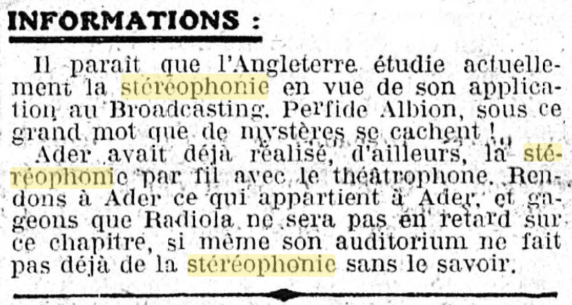
La stéréophonie va être pensée, presque simultanément par deux ingénieurs, Arthur C. Keller (1901-1983) et Alan D. Blumlein (1903-1942). Le premier travail aux laboratoires Bells, sous la direction d’Harvey Fletcher (le même Fletcher que les courbes Flecther-Munson 2.6). Keller se retrouve à travailler sur la diffusion stéréophonique, à la demande du chef d’orchestre Leopold Stokowski, alors chargé de produire des concerts sur les ondes de la NBC avec l’orchestre de Philadelphie. Stokowski est alors très insatisfait de la qualité sonore de ce type de dispositif. Il contacte donc les laboratoires Bell, leur demandant d’y apporter une solution. De cette collaboration naît une collection d’enregistrements dont le plus vieux semble être une interprétation du Carnaval romain (Ouverture) de Berlioz, le cinq décembre 1931.
De l’autre côté de l’océan, Alan Blumlein travaille pour la Colombia Graphophone Company. L’histoire veut qu’il soit frustré de son expérience du son au cinéma, ne comprenant pas pourquoi les voix sont toutes au centre alors que les acteurs se déplacent de part et d’autre de l’écran. Blumlein propose donc, pêle-mêle dans un seul et même brevet, les techniques de prise de son coïncidente XY/Blumlein et MS (pour garantir la rétrocompatibilité sur les systèmes mono), un système de gravure à deux canaux sur disques microsillons et la description du système d’enceinte que l’on utilise encore aujourd’hui sous le nom de stéréophonie. Il est amusant de constater que dans ses écrits, Blumlein ne parle pas de son stéréophonique, mais de son binaural. Ceci est d’autant plus surprenant qu’il est le premier à revendiquer l’idée que les haut-parleurs, dans un système stéréophonique, ne correspondent pas aux oreilles, et qu’il convient donc d’étudier ce système avec une approche psychoacoustique. Blumlein invente également un système, qu’il appelle « shuffling », permettant de convertir une différence de phase en différence d’intensité. Pour lui, ce dispositif fait partie intégrante d’un système de prise de son stéréophonique. Cependant, ce « shuffler » ne sera pas du tout conservé par le reste de l’industrie.
En 1931, La Colombia Graphophone Company et la Gramophone Company fusionnent pour devenir EMI.
Il existe encore quelques enregistrements du travail d’Alan Blumlein, par exemple, cette démonstration du mouvement en stéréophonie (dans un style tout à fait anglais), ou encore cette interprétation de la Chevauchée des Valkyries pour trois pianos enregistrée à Abbey Road. Ces deux enregistrements dates de 1931.
Les procédés de gravure stéréophonique sur disque microsillon de Keller et Blumlein sont très proches, cependant, il semblerait qu’aucun des deux n’ait eu connaissance des travaux de l’autre. Keller a développé son système avant Blumlein, mais ce dernier a publié son brevet en premier. Les deux approches reposent sur l’idée de graver les deux canaux à 45° de la verticale. Ce procédé semble être tombé dans l’oubli jusqu’à sa « réinvention » dans les années cinquante par la société Westrex.
Blumlein décède en plein milieu de la seconde guerre mondiale suite au crash d’un bombardier Halifax, dans lequel il effectuait des tests sur le système de radar H2S.
Malgré toutes ces avancées, l’adoption de la stéréophonie traîne, et ce pour deux raisons principales. La première est que les systèmes de gravures sur disques proposés par Blumlein ou Keller ne fonctionnent pas sur les gramophones, à cause du poids de la tête de lecture. Il faut donc attendre leurs remplacements par les disques microsillons au milieu des années cinquante. Le second frein est, comme on le rencontrera pour les systèmes dits « surround », le coût pour s’équiper d’un deuxième amplificateur et d’une deuxième enceinte.
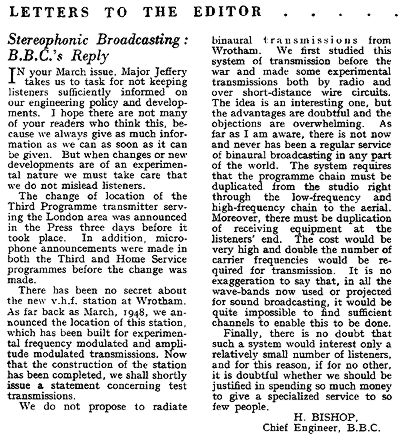
La situation se débloque dans les années soixante. La radio devient stéréophonique, en partie grâce au passage à la modulation FM. Le coût des équipements devient aussi plus raisonnable. À la fin des années soixante, on peut considérer que l’ensemble de la production musicale est passée à la stéréophonie. Il est d’ailleurs intéressant de noter que cette transition vers la stéréophonie n’a pas eu lieu au même rythme selon les genres musicaux. Dans les musiques dites « classiques », la monophonie limite à ce point la représentation de l’espace acoustique que le passage à la stéréophonie permet un réel gain de qualité. Dans les musiques dites « populaires » ou « amplifiées », la nécessité de la stéréophonie est moins évidente, elle d’ailleurs parfois perçu comme superficielle. Par exemple, il faudra attendre le dernier album des Beatles enregistré (Abbey Road - 1969) pour avoir une version stéréo officielle, approuvée par George Martin. Certains ont vu dans la stéréophonie une passade un peu exubérante, mais qui ne durerait pas. L’histoire leur aura prouvé le contraire. Il ne faut pas non plus leur jeter la pierre. En effet, les premiers enregistrements stéréophoniques n’exploitent souvent pas les deux canaux de mixages comme une opportunité de mieux représenter l’espace, mais plutôt pour démasquer les éléments entre eux. On trouve donc beaucoup de mixages avec les instruments placés dans l’enceinte gauche ou droite, et la voix en plein centre.
Devant la généralisation de la stéréophonie, certains constructeurs, labels et artistes vont alors tenter la courte aventure de la quadriphonie.
33.2 La quadriphonie : une entreprise infructueuse
La quadriphonie (quadraphonic, quadrasonic ou encore quadrophonic en anglais) est le premier format dit « surround » accessible au grand public. Les premières tentatives de productions musicales en quadriphonie commencent en 1969. Le directeur artistique Thomas Mowrey a alors réalisé un grand nombre de disques quadriphoniques, notamment pour le label Deutsche Grammophon.
Il a existé trois formats de quadriphonie. Ils sont notés de la façon suivante : K-M-N. K indique le nombre de canaux de mixage, M le nombre de canaux du support de diffusion et N le nombre de canaux de restitution (ici, N est donc toujours égal à quatre).
Le 4-4-4, que l’on pourrait qualifier de « vrai » quadriphonie. Cela impose un équipement tout particulier pour le support de diffusion. En effet, l’écrasante majorité des magnétophones à bandes et des disques microsillons sont stéréo. Certains constructeurs ont donc vendu des magnétophones « quadriphoniques », tandis que d’autres ont tenté de stocker ces quatre canaux sur disques microsillons grâce à des techniques de modulation d’amplitude. Cependant, ces procédés imposent tout de même d’équiper son lecteur vinyle d’une pointe en diamant spécifique.
Le 4-2-4 cherche à simplifier les choses pour les auditeurs. Grâce à un jeu de matriçage, on encode le signal quadriphonique sur deux canaux, que l’on espère récupérer intact par dématriçage. Si ce matriçage fonctionne parfaitement pour des sons purs, il n’en est rien pour des sons complexes, qui peuvent alors induire une corrélation importante entre les différents canaux. Le matriçage le plus convaincant fut proposé par Peter Scheiber et perfectionné par Benjamin Bauer (SQ Quadriphonic), mais même celui-là posait un problème sur la corrélation des canaux de diffusions. En effet le niveau de séparation entre deux enceintes adjacentes n’était que de trois décibels. Ce jeu d’encodage et de décodage distord l’espace sonore et ne produit pas des résultats satisfaisants.
Il « inspirera » pourtant les laboratoires de Dolby pour élaborer leur fort mal nommé « Dolby Stéréo »
- Reste le 2-2-4, que l’on pourrait qualifier du « pire des deux mondes ». Le principe consiste à « inventer » des canaux arrière à un mixage stéréophonique, pour produire un effet englobant. Le résultat est souvent flou et insatisfaisant.
La plupart des enregistrements multicanaux produits par la Deutsche Grammophon ne sont jamais sortis qu’en stéréo. En effet, le label n’a pas été convaincu par la qualité du rendu sonore quadriphonique, notamment à cause du matriçage 4-2-4.
La complexité d’installation, et l’existence de nombreux formats (dont certains n’offrant pas une qualité de restitution satisfaisante) expliquent largement l’échec commercial du format quadriphonique.
L’exploitation commerciale du son quadriphonique ne se limite pas à la musique dite « classique ». Un grand nombre d’artistes et de groupe « pop » verront leurs mixages stéréo déclinés en quadriphonie. Les plus connus sont sans doute les Pink Floyd. Dès 1967, ils embarquent en concert l’azimuth coordinator, leur permettant de recréer une diffusion quadriphonique. En 1972-1973, leur ingénieur du son de l’époque, Alan Parson propose un mix quadriphonique de leur album alors en production, The Dark Side of the Moon.
Malgré tout, le format sera un échec commercial cuisant : trop cher pour équiper un grand nombre de personnes, souvent de qualité douteuse à cause de l’étape de matriçage, existant sous de nombreux formats, etc. On trouve tout même aujourd’hui un certain nombre de mixages quadriphoniques des années soixante-dix édités sur SACD ou DVD-Audio. Le label anglais Dutton Vocalion a dans son catalogue plusieurs dizaines de ces rééditions, principalement de musique dite « classique ».
33.3 La grande aventure du son spatialisé au cinéma
Le cinéma, naissant autour de 1984, est une des industries du divertissement mettant le plus en avant les intérêts d’une diffusion spatialisée. Sa dimension visuelle spectaculaire et immersive (écran géant, salle noire, etc.) a donc motivé un traitement du son similaire. On qualifie parfois le cinéma des premiers temps de « muet », principalement dû au fait de l’absence de son synchrone rattaché au film. Cependant, imaginer le dispositif cinématographique comme un dispositif silencieux est une erreur. Dès ses débuts, il est très souvent accompagné par un musicien et il est alors courant pour le public de parler, de commenter la projection. N’oublions pas qu’à l’origine le cinéma est un spectacle forain. Ce n’est que dans un second temps que le cinéma prend place dans les théâtres puis dans des lieux qui lui sont dédiés.
Le Vitaphone est, en 1924, le premier système de synchronisation sonore, développé par Westerne Electric Company en collaboration avec les laboratoires Bells. Le premier film partiellement parlant est Le Chanter de Jazz (1927) et le premier film intégralement parlant est Lights of New York (1928).
Le cinéma sonore s’appuie alors sur une diffusion monophonique, le système de diffusion est d’ailleurs caché derrière l’écran.
33.3.1 Fantasia et le Fantasound
Fantasia est un film de Walter Disney sorti aux États-Unis en 1940. L’ambition de son auteur est de mettre en image des œuvres incontournables de la musique dite « classique » afin de toucher un nouveau public. Pour cela, il s’associe avec le chef d’orchestre Leopold Stokowski (le même personnage que nous avons évoqué plus haut).
L’ambition technique du film est énorme et, sous les exigences de Walt Disney, pousse l’équipe technique à développer le Fantasound. Ce Fantasound a deux objectifs principaux :
- Premièrement, améliorer la dynamique de diffusion sonore (alors limitée par le support)
- Deuxièmement, permettre de déplacer des sons dans l’espace.
Est alors développé le premier système de VCA (Voltage Controlled Amplifier), piloté par la fréquence d’un signal sinusoïdal inscrit sur le film. Le deuxième point est solutionné par l’invention du premier « pan pot ». Le Fantasound utilise cinq canaux de diffusions, trois enceintes frontales (gauche, centre et droit) ainsi que deux enceintes arrières (gauche et droite). Fantasia est ainsi le premier film « surround » de l’histoire.
Le Fantasound est l’ancêtre de ce que l’on appelle aujourd’hui le 5.1 (sans le caisson de grave).
Cependant, le coût global du système Fantasound le rend impraticable, pour le film Fantasia lui-même, mais également pour d’autres productions. Il faut, en effet, un petit régiment d’opérateurs pour pouvoir correctement diffuser le film.
33.3.2 Le Dolby Stereo et le son optique matricé
Durant toute la période du son analogique, le plus grand ennemi de la chaîne de production est le bruit. Ce bruit est particulièrement inhérent aux supports magnétiques et optiques alors utilisés. C’est dans ce contexte que Ray Dolby fonde son entreprise Dolby Laboratories en 1965, et commercialise le Dolby NR en 1966.
Dans les années 70, les laboratoires Dolby élaborent également un système de diffusion cinématographique multicanal. Ce dispositif d’enceinte dit LCRS (gauches, centre, droit, et une enceinte arrière dite « surround »), est associé à un matriçage 4-2-4 grandement « inspiré » par les travaux de Peter Scheiber sur le matriçage quadriphonique. Ils auront simplement la mauvaise idée d’appeler ce système « Dolby Stereo ».
Le mixage est réalisé sur quatre canaux : gauche, centre, droit et arrière. Ces quatre canaux sont alors matricés sur deux canaux que l’on nomme gauche totale et droite totale.
| L | R | C | S | |
|---|---|---|---|---|
| Lt | 1 | 0 | \(\sqrt{2}\over{2}\) | \(j\times{\sqrt{2}}\over{2}\) |
| Rt | 0 | 1 | \(\sqrt{2}\over{2}\) | \(— j\times{\sqrt{2}}\over{2}\) |
Pour décoder le signal et retrouver quatre canaux de diffusion, on doit alors dématricer les signaux Lt et Rt.
| Lt | Rt | |
|---|---|---|
| L | 1 | 0 |
| R | 0 | 1 |
| C | 1 | 1 |
| S | 1 | -1 |
Le canal central est alors formé par les signaux en phase du matriçage bicanal. Le canal arrière est composé des signaux hors phase dans le matriçage bicanal.
Les performances de ce système quant à la restitution de l’espace sont assez médiocres, ou en tout cas, déséquilibrées vers la scène frontale. Cela s’explique évidemment par le dispositif cinématographique et par la présence de l’écran géant captant toute l’attention du spectateur. Il reste tout de même difficile de le considérer comme un système englobant, car l’écart entre les enceintes latérales et l’enceinte arrière est tellement important que l’effet de source fantôme ne peut pas être opérant.
Aussi, il est rare que ce canal « surround », ou arrière, ne soit constitué que d’une seule enceinte à la diffusion. Il est courant de rencontrer un dispositif en « U », situé à l’arrière du spectateur. Cela n’arrange malheureusement pas nos histoires de précisions de restitution du champ spatiale.
En ce qui concerne la gestion du canal LFE (Low Frequency Effect), il n’y a pas de canal dédié. C’est donc un simple système de « bass management », où une partie du grave est filtré des « têtes » (enceintes principales) et redirigé vers le subwoofer.
Le tour de force de Dolby est en réalité de contourner la limitation du support optique sans pour autant remettre en cause la chaîne de production cinématographique. Même après l’avènement du son numérique, une version Dolby Stereo était toujours présente sur la pellicule, pour les salles non équipées en système de diffusion numérique, ou en cas de panne de ce dernier.
Un des métrages emblématiques de cette technologie Dolby Stereo est La Guerre des Etoiles de Georges Lucas.
33.3.3 Le passage au son numérique
Le matriçage du signal à de grandes conséquences sur l’intelligibilité de l’espace et pause des problèmes importants de flou de localisation. Lorsque le son numérique se démocratise, la nécessité du matriçage disparaît. On peut ainsi stocker plusieurs canaux audio numérisés sur pellicule. D’ailleurs, il n’est plus nécessaire d’utiliser des réducteurs de bruit, la dynamique du signal numérisé est bien plus grande que celle offerte par les supports analogiques.
Le passage au son numérique fut le début d’une longue traversée du désert pour l’entreprise Dolby.
L’arrivée du son numérique impose aussi une rude concurrence chez les acteurs de cette mutation. On trouvera ainsi la société nipponne Sony, les Californiens de DTS et encore et toujours Dolby. On arrive d’ailleurs très bien à relire l’histoire de cette course aux nouveaux formats audio numériques en regardant une pellicule de cette époque.
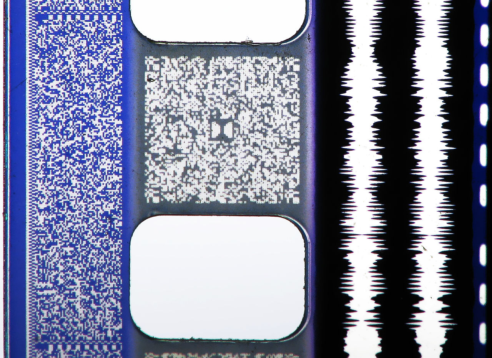
Dolby occupe déjà toute une partie de la pellicule avec le stockage optique analogique du Dolby Stereo. Sony arrive alors le premier avec son système de son numérique sur support optique avec le SDDS (Sony Dynamic Digital Sound). Lorsque Dolby termine l’élaboration de son encodage AC-3 pour le Dolby Digital, il ne reste alors que l’espace entre les perforations. Finalement, DTS est obligé de trouver une solution de contournement et n’inscrit qu’une piste de timecode sur le film. Cette piste permet alors de synchroniser un lecteur de CD-ROM contenant la piste audio du film.
Le Dolby digital et le format DTS sont tous deux pensés pour une diffusion sur un système 5.1. Le SDDS propose une couverture de l’espace frontale plus importante, avec 5 enceintes accompagnées de deux enceintes arrière pour le « surrounds ». En pratique, ces canaux de diffusions supplémentaires ne sont pas exploités lors du mixage, et les mixeurs se content de fournir un mix 5.1 compatible avec l’ensemble des formats. Le premier film mixé en DTS est Jurassic Park (1993), de Steven Spielberg, tandis que le premier film utilisant le système Sony est Last Action Hereos (1993) par John McTiernan.
Le 5.1 n’a pas franchement eu de succès dans son exploitation grand public. Les raisons sont toujours un peu les mêmes : le coût, la place, l’esthétique (certains et certaines n’aiment pas peupler leur séjour d’enceintes). Ce format s’est donc limité à un public de niche, souvent associé à l’audiophilie.
Il y a eu ensuite une multitude de formats dérivés et d’évolutions, comme le Dolby Digital Surround EX, rajoutant une enceinte centrale à l’arrière. Les formats domestiques furent également nombreux, avec les Dolby Surround, Dolby Logic Pro, Dolby Logic Pro II, etc.
L’évolution « majeure » suivante est le passage au 7.1, où l’on considère alors deux enceintes plein gauche et droite et deux enceintes arrière pour compléter le LCR classique. Le premier film mixé en 7.1 est Toy Story 3 (2010), des studios Pixar.
33.3.4 Passage au mixage orienté objet et le retour en force de Dolby
En 2012, Dolby annonce un tout nouveau format de mixage, le Dolby Atmos. C’est une technologie hybride entre mixage orienté canal et mixage orienté objet. Cette approche de mixage orienté objet considère une source sonore (un canal audio mono par exemple) comme un objet, auquel on associe des informations de mixage (volume et position dans l’espace), qui sont ensuite interprétées par un décodeur. Ce dispositif permettait initialement de travailler sur un système d’enceintes dit 7.1.4, soit une 7.1 augmentée de quatre enceintes en élévation. Il s’agit donc d’un des premiers formats cinéma intégrant la composante d’élévation.
L’approche orientée objet permet de solutionner la problématique des « mixdown » des films. En effet, un métrage précédemment mixé en 7.1 doit ensuite être downmixé en 5.1 pour les cinémas moins bien équipés, puis aussi en stéréo pour une exploitation télévisuelle. Ici, il suffit d’indiquer au décodeur le système de haut-parleurs auquel il est connecté et les métadonnées de mixage seront interprétées pour retranscrire au mieux le mixage. On peut même réaliser un mixage dédié à une écoute au casque, en utilisant la synthèse binaurale.
Ce format Dolby Atmos est un succès majeur, replaçant Dolby dans une situation de monopole. Très rapidement, le logiciel Pro Tools d’AVID intègre le premier panner Dolby Atmos, et les salles de cinéma s’équipent du décodeur et du système d’enceinte associé.
Ce succès s’infusera aussi dans le monde de la musique. En 2021, Apple annonce le support natif du Dolby Atmos (avec pour la première fois, le moteur de rendu Dolby Atmos intégré) dans son logiciel de musique assistée par ordinateur Logic Pro. De plus, son service de streaming, Apple Music, intègre également le support de la lecture de mixages réalisés avec le Dolby Atmos.
33.4 Le binaural : la spatialisation sonore pour tous
Il est bon que nous donnions ici une définition précise du binaural. De nos jours, le binaural rassemble l’ensemble des techniques et des moyens permettant de reproduire l’effet du corps humain (tête, oreilles, torse) sur un signal audio. Un signal binaural comporte donc deux canaux, filtrés par la réponse en fréquence du corps humain. Cependant, dans l’histoire du son, le terme binaural a souvent été utilisé comme synonyme du son stéréophonique.
Par ailleurs, le terme « stéréophonie » se substitue souvent pour désigner tous flux audio comprenant deux canaux. Ce n’est rigoureusement pas juste, car la stéréophonie sous-entendant la diffusion sur un système de haut-parleurs spécifique.
L’histoire du son binaural s’anime également dans les années 1930, dans les laboratoires Bell. H. Flecther dirige alors une équipe travaillant sur la mise au point d’un mannequin de cire équipé de microphones sur les joues, nommé Oscar.
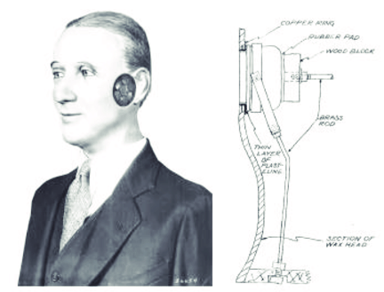
Ce premier dispositif permet de réaliser un certain nombre de tests sur notre perception. Il est alors rapidement montré que l’absence d’image lors de l’écoute d’un signal binaural entraîne l’augmentation d’erreurs de localisation (confusion entre l’avant et l’arrière).
En Europe, deux chercheurs de la société néerlandaise Philips, De Boer et Vermeulen, développe le premier mannequin avec une simulation de l’effet du pavillon, grâce à l’intégration des microphones directement dans les oreilles.
Dans les années 40, De Boer dépose un brevet pour un système de prise de son utilisant une simple sphère d’au moins quatorze centimètres de diamètre en lieu et place d’une tête de mannequin. Les microphones sont alors placés de part et d’autre de la sphère.
Toujours aux Pays-Bas, il est alors fait l’expérience de la diffusion de contenus binauraux sur les ondes radio, utilisant sans doute le mannequin de De Boer et Vermeulen.
Durant les années cinquante, plusieurs compagnies développent leurs propres systèmes de prise de son binaural, notamment Schoeps et AKG.
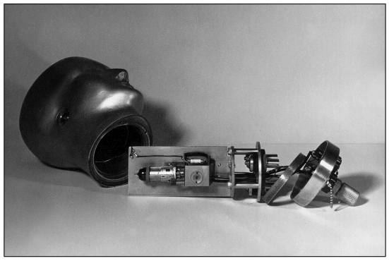
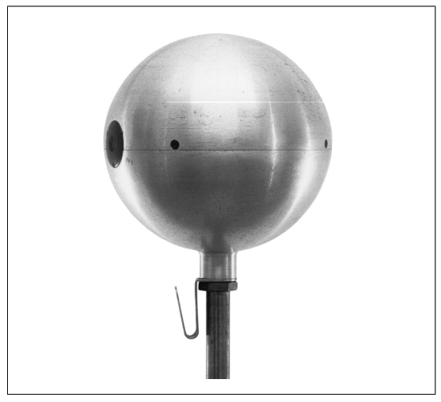
Les années soixante et soixante-dix sont marquées par de nombreuses études sur l’écoute binaurale et l’effet de notre corps sur les signaux. Le système KEMAR devient le premier mannequin de référence. Les mannequins précédents étant souvent récupérés de grands magasins, leurs propriétés acoustiques ne correspondent pas à celle du corps humain. Ce paramètre est alors corrigé par le modèle KEMAR et est ainsi le premier utilisé pour des mesures de prothèses auditives.
En 1973, la société Neumann dévoile sa tête artificielle KU-80, équipée de microphones omnidirectionnels KM83. L’année suivante, AKG propose elle aussi son système de prise de son binaural D99c.
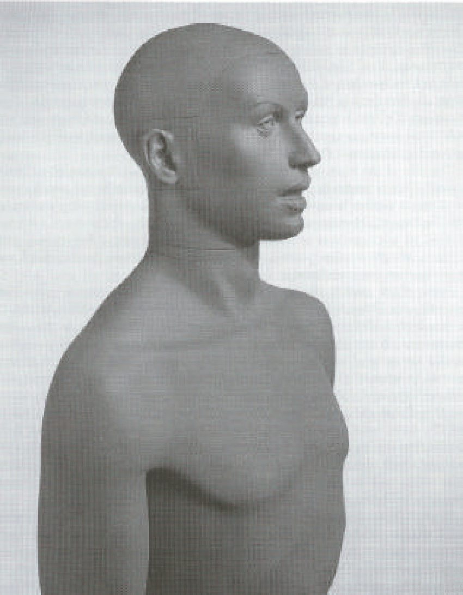
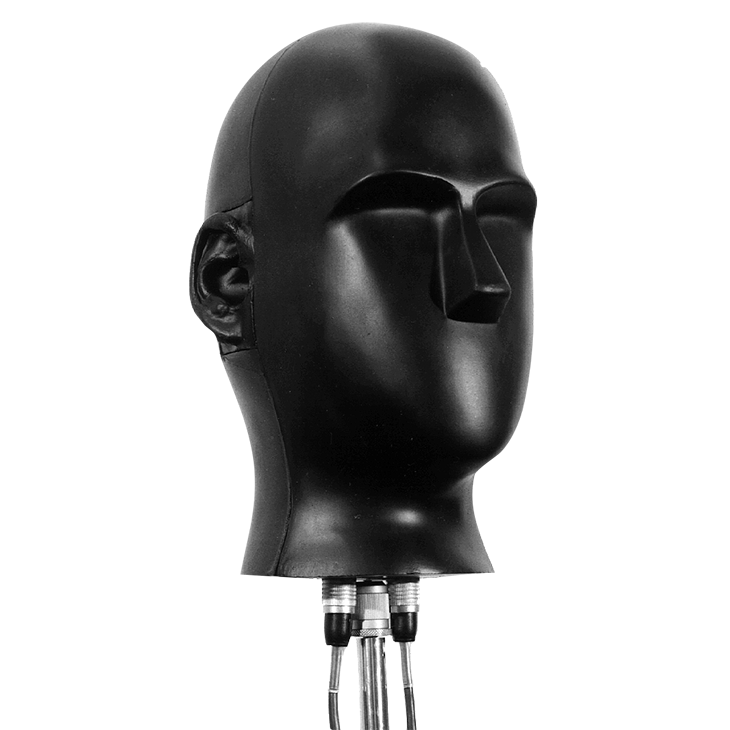
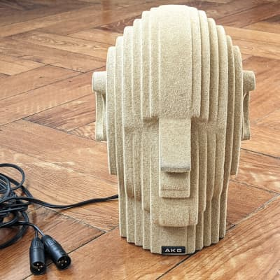
En 1997, un groupe de chercheur publie une étude comparative des différentes têtes artificielles de l’époque. Il en ressort un problème persistant de trouble de la localisation, particulièrement sur la discrimination de l’avant et de l’arrière. Est alors mise en cause la forme des pavillons des différents mannequins. En partant des résultats de cette étude, plusieurs initiatives similaires apparaissent, consistant à mesurer la réponse en fréquence de la tête d’un grand nombre d’individus, afin de trouver la courbe de réponse correspondant au plus grand nombre. Ce type d’approche donnera, entre autres, naissance à la tête KU-100 de Neumann.
Le résultat de ce type de mesures se nomme HRTF, pour Head-Related Transfer Function, ou, fonction de transfert de la tête.
Grâce au passage à l’audionumérique, ainsi qu’à l’augmentation significative de la puissance de calcul des ordinateurs, on voit apparaître dans les années quatre-vingt-dix la technique de la synthèse binaurale (voir section — 35.2). Il devient alors possible à partir de simples prises de son monophonique de recréer l’effet de la tête sur le signal grâce à une batterie de filtres (toujours ces fameuses HRTF).
En France, Lucie Hardoin est une spécialiste de prise de son et de la postproduction binaurale. Elle met à disposition sur son site web un grand nombre d’extraits pour en découvrir les qualités sonores.
33.5 Les pionniers de la musique spatialisée
S’il est important de couvrir l’histoire technologique, il l’est tout autant de raconter celle de ceux qui ont pensé la spatialisation sonore dans leurs créations. Les mouvements de la musique concrète et de la musique électroacoustique ont été particulièrement féconds sur ce sujet.
Pierre Schaeffer (1910-1995), ingénieur français diplômé de l’école polytechnique, propose les fondations esthétiques et théoriques de la musique concrète dans les années quarante. Au cœur de ces idées est celle de l’acousmatique. Une musique acousmatique est une musique qui est complètement arrachée à son contexte visuel et n’est plus que son. Elle est grandement permise par les avancées technologiques qui lui sont contemporaines en matière d’enregistrement sonore. L’objectif de l’écoute acousmatique est de permettre à l’auditeur une plus grande imagination à la réponse du stimulus sonore seul. Ce concept est aussi étroitement lié à l’art radiophonique et ses moyens de diffusion. Suite à sa rencontre avec Pierre Henri (1927-2017), les deux hommes créeront « Symphonie pour un homme seul » en 1950. Henri collaborera aussi avec Edgar Varèse en 1954 pour la création de Déserts au Théâtre des Champs-Élysées, en tant que spatialisateur. Le concert est aussi diffusé à la radio, et pour la première fois en stéréophonie.
En 1951, Schaeffer créer le « Groupe de Recherche en Musique Concrète », avec Pierre Henri à sa tête, qui devient dès 1958 le « Groupe de Recherche Musique » (GRM). On y retrouve alors, entre autres, Iannis Xenakis, Michel Chion et François Bayle (Pierre Henri quitte le projet en 1958, avant la création du GRM).
Pierre Schaeffer fonde également le service de recherche de la RTF en 1964, dédié à la recherche autour de radio et de la télévision.
Cette branche de la musique a à cœur d’étudier les effets de la captation sonore et de sa diffusion. Si l’on y réfléchit beaucoup sur les façons de transformer le son par la manipulation de son support de stockage, on se pose également la question du moyen de diffusion. En 1974, François Bayle invente l’orchestre de haut-parleurs qu’il nomme Acousmonium. Ce système de diffusion est constitué de multiples haut-parleurs, de taille et qualités sonores différentes, placés sur scène, comme des musiciens. Ces haut-parleurs sont alors « orchestré » par le compositeur qui opère depuis une table de mixage, parfois aussi appelée table de spatialisation. Ce dispositif existe toujours et est régulièrement utilisé en concert.
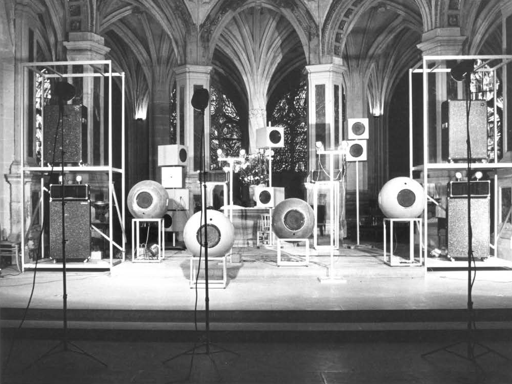
À découvrir, une archive de 1983 sur l’Acousmonium et la musique qu’on lui fait jouer.
Également, est créé en 1970 le Groupe de musique expérimentale de Bourges (GMEB) par Françoise Barrière et Christian Clozier. Il est à l’origine de l’invention d’une table de spatialisation nommée Gmebaphone. Si l’Acousmonium propose un « routage » dynamique des signaux vers les différents haut-parleurs, le Gmebaphone adopte une approche de filtrage, découpant le signal entrant en bandes pour les répartir sur différents haut-parleurs spécialisés.
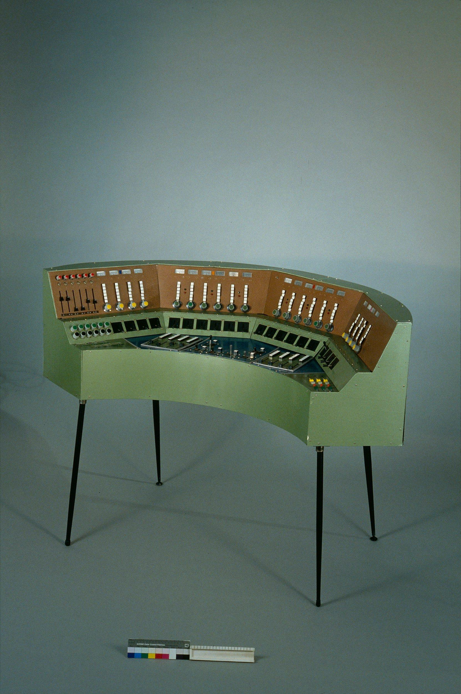
Le GMEB devient l’IMEB en 1997 (Institut de Musique Expérimentale de Bourges) avant d’être fermé définitivement en juillet 2011.
À partir des années 50, un grand nombre de compositeurs (principalement de musique électroacoustique et électronique) se poseront cette question de l’espace et la spatialisation. On peut alors citer : Iannis Xenakis, Olivier Messaien, Karlheinz Stockhausen et un certain Pierre Boulez qui fondra l’IRCAM en 1970.
À noter l’excellent site Electrodoc, centre de documentation en musiques électroacoustiques. On y trouve de multiples documentations sur les personnes et les œuvres rattachées à la musique électroacoustique.
33.6 L’ambisonie : décorréler l’espace de production et l’espace d’écoute
Depuis le milieu des années soixante, une équipe de chercheurs anglais de la National Research Development Corporation mènent de nombreuses recherches sur la spatialisation sonore et sur le son « surround ». Nous sommes donc en plein cœur du (bref) boom de la quadriphonie. Parmi eux, on retrouve particulièrement le mathématicien Micheal Gerzon (1945-1996)
Ensemble, ils élaborent une proposition alternative au son matricé quadriphonique qu’ils nomment « ambisonie ». Le principe fondamental de cette technique est de décomposer l’espace sonore en plusieurs « directions », ou plus justement, en plusieurs harmoniques sphériques. Alors, nous ne prenons plus le son ni ne le mixons, en tenant compte d’un système de diffusion précis (stéréophonie ou quadriphonie par exemple), mais plutôt en représentant un espace échantillonné.
Le premier apport concret des recherches de Michael Gerzon et de ses collègues est le développement d’une technique de prise de son utilisant un tétraèdre de microphones.


De tels dispositifs étant limités par l’encombrement spatial de chaque microphone, il fut ensuite inventé les microphones ambisoniques, regroupant les quatre capsules de façons aussi coïncidentes que possible. Le premier de ce type est le Soundfield, qui fit son baptême en février 1975.

La même année, Michael Gerzon rédige deux articles sur le principe général de l’ambisonie et son utilisation en studio. On y trouve notamment la définition des différents formats d’ambisonie, principalement:
- Le A-Format, correspondant aux canaux du microphone Soundfield
- Le B-Format, format matricé WXYZ (W est le canal omni, ou commun, les autres canaux sont les harmoniques sphériques permettant d’apposer une direction au son)
L’ambisonie, comme technique de production et de prise de son, ne rencontra malheureusement qu’un intérêt très limité. On notera tout de même les enregistrements du label Nimbus records, réalisés pour la plupart en ambisonie. De plus, lorsque le nombre de haut-parleurs devient trop important, de fortes colorations apparaissent sur le signal. Elle reste alors longtemps une technique restreinte au monde de la recherche.
Michael Gerzon est très influencé par le brevet de 1931 d’Alan Blumlein sur le son stéréophonique. On y retrouve la même idée de matriçage (Stéréo - MS, A-Format — B-Format) et une emphase sur le prise de son coïncidente. Gerzon a d’ailleurs écrit un article sur le circuit de shuffler d’Alan Blumlein.
L’intérêt autour de l’ambisonie revient dans les années quatre-vingt-dix, notamment grâce aux recherches sur l’Ambisonie d’Ordre Plus Elevé (HOA : Higher Order Ambisonic). Cette stratégie vise à augmenter la finesse d’échantillonnage de l’espace en augmentant le nombre d’harmoniques sphériques utilisés. Cette approche est décrite dans la thèse de Jérome Daniels. L’ambisonie de Michael Gerzon devient alors l’ambisonie de premier ordre, et chaque nouvel ordre rajoute un certain nombre de nouvelles « directions spatiales ». Cette précision d’échantillonnage permet de meilleurs rendus sur un grand nombre de haut-parleurs, ainsi qu’un décodage ambisonique vers binaural plus qualitatif. En guise d’exemple, les outils de création de vidéos en réalité virtuelle (VR) de Meta supportent l’ambisonie jusqu’au troisième ordre.
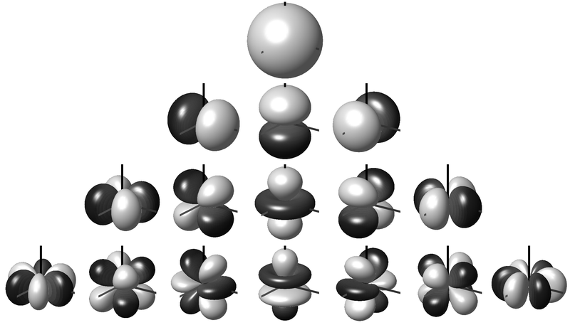
Ce regain d’intérêt et la multiplication des canaux ambisoniques sont à corréler avec l’augmentation de la puissance des ordinateurs. En effet, les outils de traitement numériques sont bien plus adéquats que leurs homologues analogiques pour le traitement ambisonique. De plus, l’industrie de la réalité virtuelle, qu’elle soit sous la forme de simples vidéos, ou mieux vidéoludique, a montré un réel intérêt pour les formats audio ambisoniques, notamment pour leurs capacités à être interactifs.